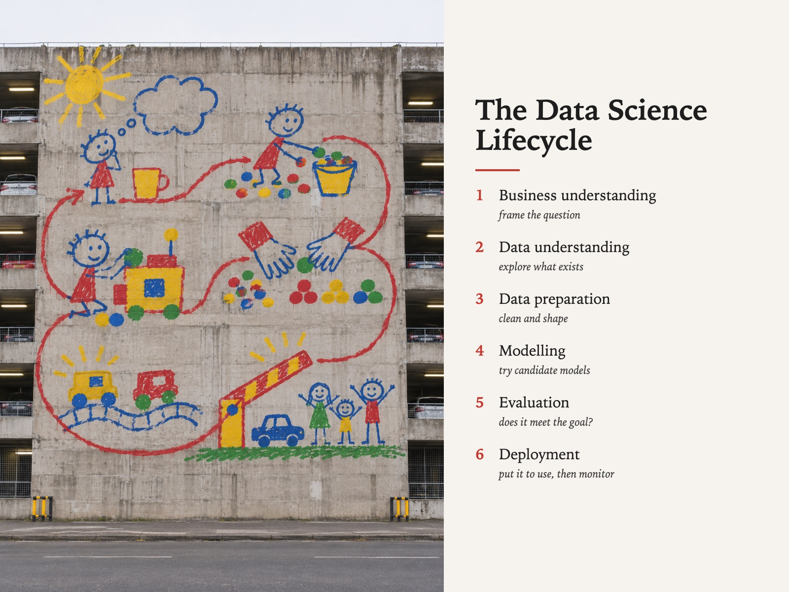

Style Vault / Feed / Crayon On Concrete
Crayon On Concrete
SV-065

Example: The data science lifecycle, set in Crayon On Concrete
In plain words
A real photo of huge serious infrastructure - a car park, a cooling tower, a flyover - with a genuinely childish crayon-style drawing on it at building scale. It feels funny and a little disarming, then impressive once you notice the size. What makes it this style is the gap between a mark made with no skill and the money and cranes it took to put it there. Best for: making complex systems approachable; launch hooks for internal platforms; simplicity as a design value; workshop openers on creativity. Avoid: text or lettering generated inside the image.
Topics it fits
- Making complex systems approachablea child's doodle on serious infrastructure tells the audience the heavy topic will be explained simply
- Launch hooks for internal platformsthe scale gap grabs attention on a slide or feed before the details arrive
- Simplicity as a design valuethe drawing is deliberately basic while the structure still works, which is exactly the argument for simple design
- Workshop openers on creativitythe playful mark on a grim building gives people permission to sketch badly in the session
Art style and layout
- core locked [drawing_is_genuinely_childish, structure_still_works, flat_overcast_light, documentary_camera, scale_gap_is_the_subject]
- the tension a mark made with no skill, executed with total skill, at a scale only money and cranes can buy. If the drawing looks like a designer's version of childish, the card is dead
- drawing is genuinely childish THE CARD, and the thing MJ will break instantly. Its reflex is charming professional illustration. Say "exactly as a six-year-old would draw it - wobbling single-weight outlines, no perspective, colours that overshoot their own outlines" every time. Any tapering line, any considered composition inside the drawing, any styled cuteness is a miss
- structure still works cars parked at it, cables live, lights on, rust in the right places. An abandoned building makes it street art; a working one makes it strange
- flat overcast light no sunset, no long shadows, no wet reflections. This is also the anti-sameness lever - the fired week before this card was written was dark-and-lit-by-points three runs in a row
- documentary camera 50mm, street level, straight-on, sharp, no grade. Not a drone, not a wide-angle hero shot, not tilted
- palette [concrete "#A9A49B with staining "#6F6A61, under crayon primaries "#D8232A "#F3C218 "#1B57A6 "#3F9142; no pastels, no tints, no gradients]
- negative space the sky, flat and featureless and uninteresting on purpose
- era reference post-war civic concrete photographed in the deadpan topographic tradition, with contemporary large-scale naive muralism on top. Do not name a living artist
What must stay, what may change
subject - ten far-apart pieces of SERIOUS INFRASTRUCTURE wearing the same childish drawing (a brutalist car park, a grain silo, a motorway flyover, a nuclear cooling tower, a container crane, a water treatment plant, a power substation, a multi-storey hospital wing, a lock gate, a grid of social housing). NOT ten pretty buildings - the card only works when the structure is humourless. The crayon language stays locked
As JSON
Paste this into a prompt or a skill to reuse the style.
{
"id": "SV-065",
"name": "Crayon On Concrete",
"audience": [
"feed"
],
"category": [
"photography"
],
"format": [
"illustration",
"poster"
],
"maker": "diffusion",
"keep_and_swap": "**subject - ten far-apart pieces of SERIOUS INFRASTRUCTURE wearing the same childish drawing** (a brutalist car park, a grain silo, a motorway flyover, a nuclear cooling tower, a container crane, a water treatment plant, a power substation, a multi-storey hospital wing, a lock gate, a grid of social housing). NOT ten pretty buildings - the card only works when the structure is humourless. The crayon language stays locked",
"style_dna": {
"core_locked": "[drawing_is_genuinely_childish, structure_still_works, flat_overcast_light, documentary_camera, scale_gap_is_the_subject]",
"the_tension": "a mark made with no skill, executed with total skill, at a scale only money and cranes can buy. If the drawing looks like a designer's version of childish, the card is dead",
"drawing_is_genuinely_childish": "THE CARD, and the thing MJ will break instantly. Its reflex is charming professional illustration. **Say \"exactly as a six-year-old would draw it - wobbling single-weight outlines, no perspective, colours that overshoot their own outlines\" every time.** Any tapering line, any considered composition inside the drawing, any styled cuteness is a miss",
"structure_still_works": "cars parked at it, cables live, lights on, rust in the right places. An abandoned building makes it street art; a working one makes it strange",
"flat_overcast_light": "no sunset, no long shadows, no wet reflections. This is also the anti-sameness lever - the fired week before this card was written was dark-and-lit-by-points three runs in a row",
"documentary_camera": "50mm, street level, straight-on, sharp, no grade. Not a drone, not a wide-angle hero shot, not tilted",
"palette": "[concrete \"#A9A49B with staining \"#6F6A61, under crayon primaries \"#D8232A \"#F3C218 \"#1B57A6 \"#3F9142; no pastels, no tints, no gradients]",
"negative_space": "the sky, flat and featureless and uninteresting on purpose",
"era_reference": "post-war civic concrete photographed in the deadpan topographic tradition, with contemporary large-scale naive muralism on top. **Do not name a living artist**"
},
"elements": {
"subject": "one piece of humourless working infrastructure, whole, wearing a child's drawing at its own scale. **The building is still in use** - not abandoned, not a ruin, not a gallery",
"composition": "documentary and dead-on. Straight-on elevation from across the road, horizon level, structure filling most of the frame, a strip of ordinary ground at the bottom. The drawing is centred on the facade, not the frame",
"light": "**flat overcast daylight.** Deliberately undramatic - the moment the light gets beautiful the picture becomes an art photograph and the joke evaporates",
"palette": "concrete grey-beige and weather-stain under **crayon-box primaries** - post-box red, school-bus yellow, primary blue, grass green. Six colours at most, all flat and opaque",
"material/texture": "real concrete - shutter lines, staining, patched repairs, streaks. The paint on top is flat and opaque and slightly over the edges, like a big brush doing a small hand's drawing",
"mood": "deadpan. Nobody in the picture finds it remarkable. The tenderness is entirely in the gap between the mark and the mass",
"camera/render": "50mm documentary photograph, street level, sharp, no grade, no vignette, no golden hour, no drone"
},
"palette_hex": [
"#a9a49b",
"#6f6a61",
"#d8232a",
"#f3c218",
"#1b57a6",
"#3f9142"
],
"topics": [
{
"topic": "Making complex systems approachable",
"why": "a child's doodle on serious infrastructure tells the audience the heavy topic will be explained simply"
},
{
"topic": "Launch hooks for internal platforms",
"why": "the scale gap grabs attention on a slide or feed before the details arrive"
},
{
"topic": "Simplicity as a design value",
"why": "the drawing is deliberately basic while the structure still works, which is exactly the argument for simple design"
},
{
"topic": "Workshop openers on creativity",
"why": "the playful mark on a grim building gives people permission to sketch badly in the session"
}
]
}